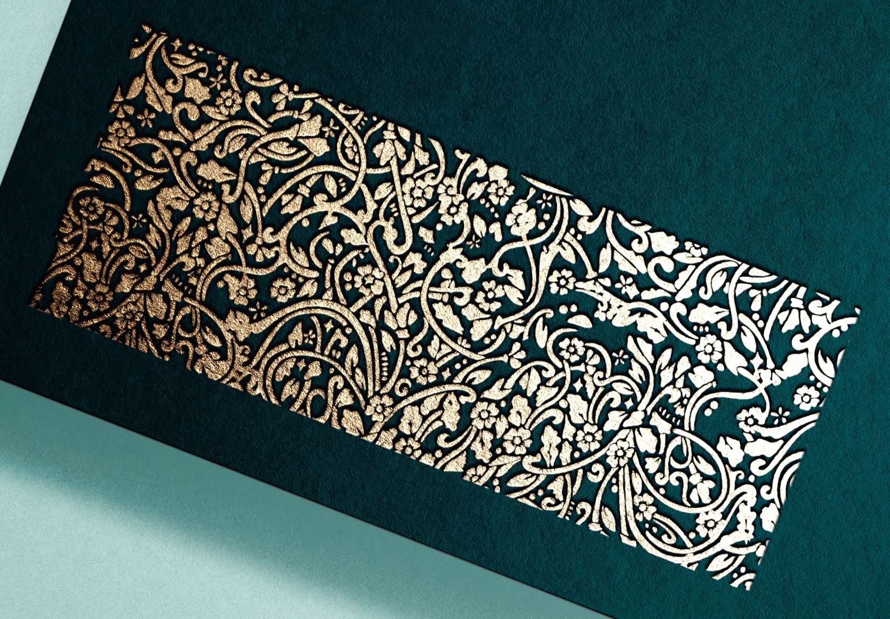
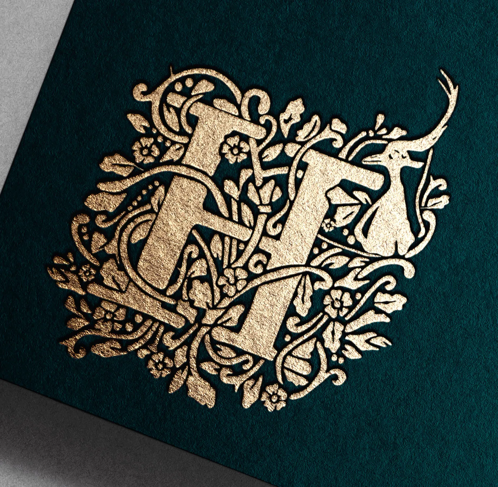
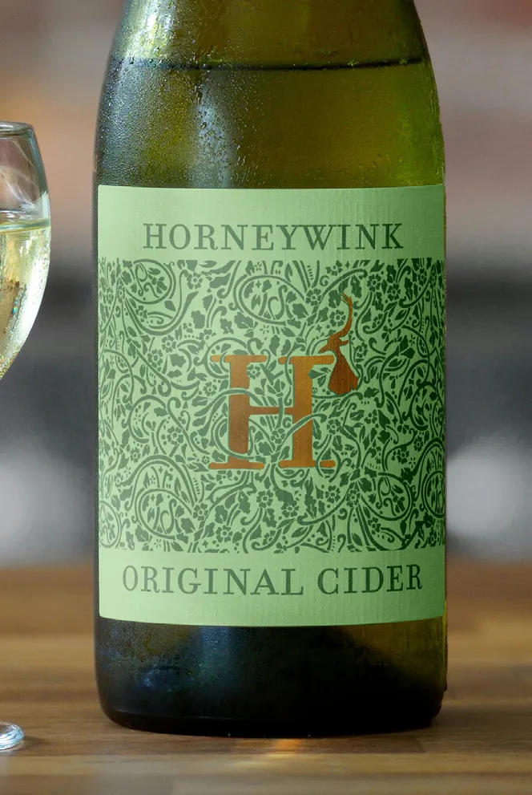
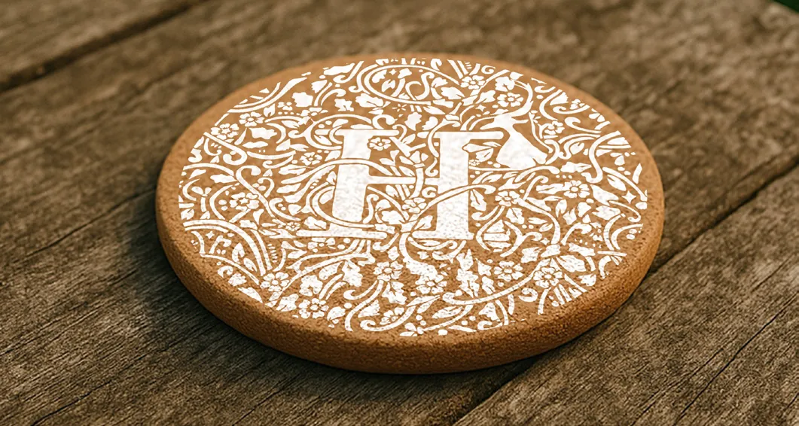
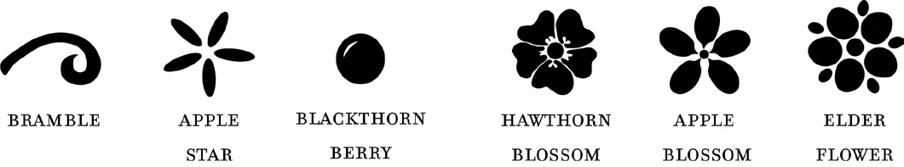
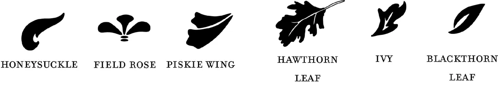
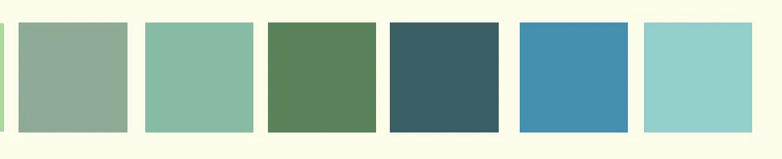
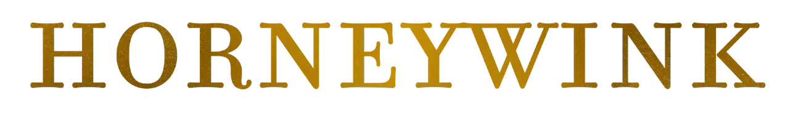

Horneywink Cider
A live client brief for a Cornish cider brand, developed collaboratively with two coursemates. Our team was selected from the course to create the brand, and we continued to work with the client after graduating. Drawing on Cornish folklore and hedgerow botanicals, the identity centres on a hand-drawn lapwing and motifs embodying craft and quality.







